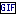

To add animated GIFs
- In the toolbox, click

. (Or, on the View menu, click GIF Picker.)
- Type a word, such as sparkle or under construction, and press ENTER.
- Click a GIF to put it on the page, or drag it where you want it.
Notes
- The GIFs come from GifCities, the Internet Archive's collection of GIFs rescued from GeoCities. They're authentic. That's not always a compliment.
- Click the ♥ on a GIF to keep it in the Favorites tab. If you're signed in, your favorites follow you to other computers.
- A GIF on the page is a sticker: it keeps animating, and you can move and resize it like any element. You can also paste or drop an animated GIF file onto Paint to make a sticker.
- To flip or rotate the selected sticker, use the sticker commands on the Image menu. Ctrl+. and Ctrl+, rotate it right and left.
- To turn a selection of your painting into a sticker, select it, and then on the Image menu, click Make Sticker from Selection.
- Flatten Stickers on the Image menu draws all the stickers into the picture. They stop animating, as flattened things do.
Related Topics